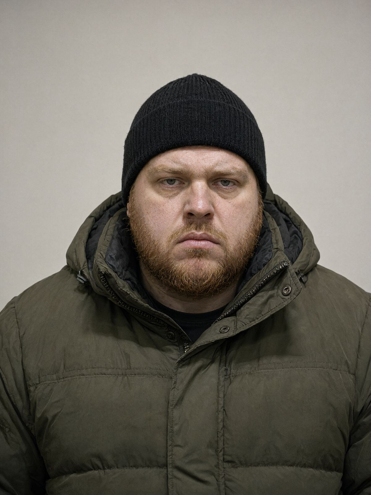

Місто: Івано-Франківськ
Дата: 21.10.2026
Час початку: 12:30 Час закінчення: 13:45
Місце проведення: СУ ГУНП в Івано-Франківській області, кабінет № 312
Склав: майор поліції Волков Д.С., старший слідчий в ОВС СУ ГУНП в Івано-Франківській області
Присутні: підозрюваний; захисник — адвокат Стасів Н.Я. (Регіональний центр з надання БВПД); слідчий
Допитується: Сенчук Іван Петрович, 1989 р.н., водій БФ «Родина», проживає: с. Підгір'я, вул. Лісова, 12 (реабцентр); тел. +380 68 455 02 19.
Підозрюваному повідомлено про підозру у вчиненні кримінального правопорушення, передбаченого ст. 396 КК України (заздалегідь не обіцяне приховування особливо тяжкого злочину). Роз'яснено права, передбачені ст. 42 КПК України, та ст. 63 Конституції України. Підозрюваний заявив, що бажає давати показання в присутності захисника.
Питання: Іване Петровичу, в групі «Родина ❤️» ви — «Брат Іван»?
Відповідь: Я. Мене там так звуть, і в центрі так звуть. Я в «Родині» шостий рік. Прийшов після другого терміну, бухав по-чорному, Батько мене з канави витягнув. Я йому вдячний був. (пауза) Був.
Питання: Розкажіть про ніч з 15 на 16 жовтня.
Відповідь: Я спав у гуртожитку, телефон під подушкою. О дванадцятій щось пищить — група. Кум пише: «Брат Іван — під'їдь за телефоном на 00:40, на траву біля бабиної хати». Я написав «Буду». Я не питав, чий телефон. У нас не питають. Взяв ключі від Шкоди, поїхав. Батько бачив, як я виїжджаю, з вікна, нічого не сказав.
Їхав через Тисменицю. Під Франківськом, на Пасічній, о 00:38 подзвонив Кум, коротко: «Де ти?» — «Під'їжджаю». — «Ставай на траву перед бабиною хатою, фари вимкни, вікно відкрий». Я так і зробив. О 00:40 став на траву. Там тихо, тільки пес у баби брехав.
Питання: Що було далі?
Відповідь: З боку ЖК, з хвіртки, підійшов здоровий такий, з ліхтарем — довгим, чорним, як кийок. Нахилився до вікна й передав у вікно телефон. Великий смартфон, у чорному чохлі. Вимкнений. Руки в нього трусились, казав: «Мати сказала — так треба. Він мене впізнав». Я питаю: «Хто впізнав? Що треба?» А він тільки: «Вези Батькові. Швидко». І пішов назад. Я постояв хвилину й поїхав, десь о 00:44.
Питання: Ви знаєте, хто це був?
Відповідь: Кум. Руслан, охоронець з ЖК. Я його знаю по хрестинах у Батька, і він до нас у центр приїжджав, на Паджеро сірому. Прізвища не знав до вчора. Без пальця на лівій руці — я помітив, коли він телефон подавав.
Питання: А «Мати» — хто це?
Відповідь: Ольга Степанівна з міста, вона касу веде. Вона в центр гроші привозить, і нам, хлопцям, пироги. Її Богдан у нас живе. Всі знають, що вона — Мати. Вона й сама так підписується, коли гроші передає: «від Матері».
Питання: Що ви зробили з телефоном?
Відповідь: Привіз у центр, десь о десятій на другу. Батько чекав надворі, в куфайці. Я віддав. Він подивився на телефон і каже: «Іди спати, Іване. Ти нічого не возив». А сам пішов до лазні. Я з гуртожитку бачив — у лазні засвітилось, з комина дим пішов. Ніхто серед ночі лазню не палить. Батько спалив його в печі лазні о пів на другу, може, трохи раніше. Я зранку ходив — там пахло горілим пластиком.
Питання: Коли ви дізналися, що Палійчук загинув?
Відповідь: Зранку, о сьомій. В групі Артем написав: «Він мертвий. Ви казали тихо!!!». Потім Батько написав: «Всім видалити все». Я видалив. І все зрозумів. (довго мовчить) Я ж того Палійчука возив. На обсмажувальню, хлопців на пакування. Він мені раз сто гривень дав «на каву», хоча я казав, що не треба.
Питання: Чому ви вирішили давати показання?
Відповідь: Бо я думав, що ми — родина. А родина своїх по голові не б'є. Я сам сидів, я знаю, що таке, коли тобі «так треба». Я не хочу третій раз. І не хочу, щоб Артемові щось зробили, він малий ще, дурний. (до захисника) Я правильно кажу? (захисник: «Ви кажете правду, це головне»)
Питання: Чи хочете щось додати?
Відповідь: У сейфі в Батька — паспорти. Всіх хлопців. І мій там. Я шостий рік без паспорта, пане майоре. Якщо будете там шукати — то мій синій, у шкіряній обкладинці. Мамина обкладинка.
Допит завершено о 13:45. Протокол прочитано підозрюваним особисто в присутності захисника. Зауважень немає. Показання надано добровільно.
З моїх слів записано вірно, мною прочитано.
Підозрюваний: Сенчук Сенчук І.П.
Захисник: Стасів адвокат Стасів Н.Я.
Слідчий: Волков майор поліції Волков Д.С.